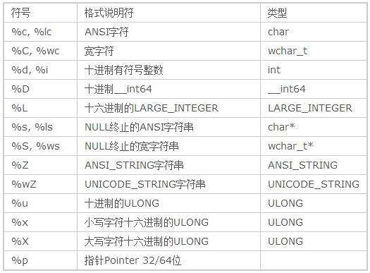

KdPrint(())
KdPrint 宏在调试版本下 打印log信息 在发布版本下被替换为空
WCHAR file_buffer[MAX_PATH]={0};
KdPrint(("进程名:%S\n",file_buffer));
UNICODE_STRING protected_name;
RtlInitUnicodeString(&protected_name,file_buffer);
KdPrint(("进程名:%wZ\n",&protected_name));

注意
KdPrint 在调试版本 会被 替换成对 DbgPrint函数 的调用
故要在 发布版打印log 可直接调用 DbgPrint
捕获 DbgPrint
在 win vista 之后的系统可以 调用 DbgSetDebugPrintCallback 注册一个回调函数用以捕获 DbgPrint的打印信息
在 win vista 之前系统只有hook DbgPrint
NTSTATUS
NTAPI
DbgSetDebugPrintCallback (
__in PDEBUG_PRINT_CALLBACK DebugPrintCallback, //要注册或卸载掉回调函数
__in BOOLEAN Enable //TRUE 注册函数 FALSE 卸载函数
);
//回调函数声明
VOID
(*PDEBUG_PRINT_CALLBACK) (
__in PSTRING Output, //被打印的 ANSI_STRING 字符串
__in ULONG ComponentId, //暂时不解
__in ULONG Level //执行等级
);